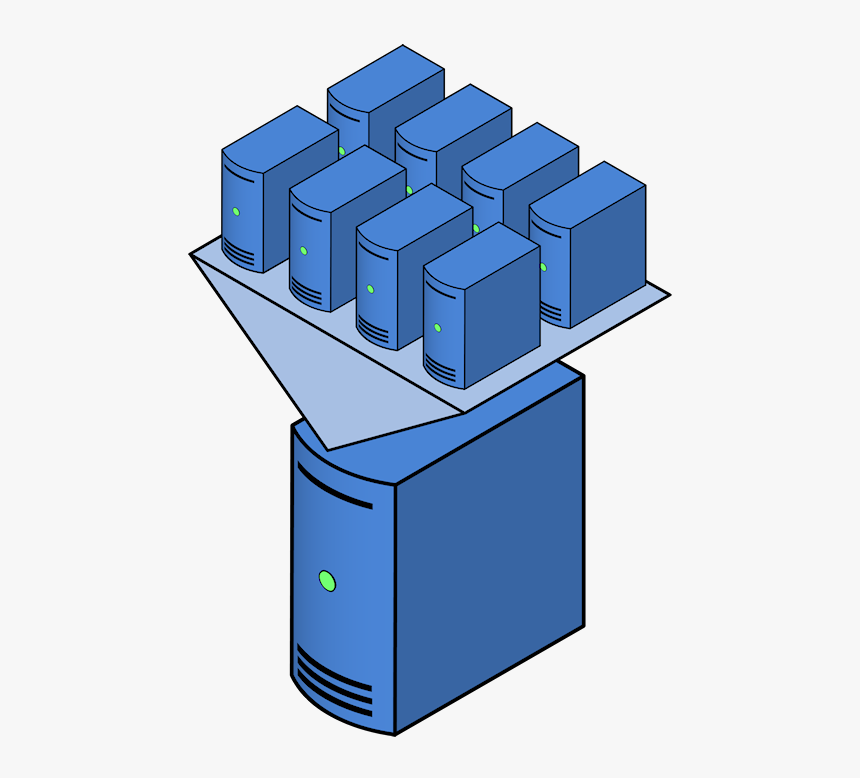
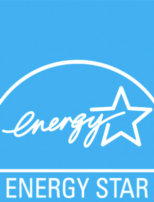

Aperture Software prende a cure l'ambiente e la sostenibilità è una delle nostre priorità. Viene sempre messa in primo piano quando decisioni importanti devono essere prese.
Le nostri azioni concrete per un futuro sostenibile
Siamo orgogliosi di annunciare che i nostri server sono alimentati da fonti di energia rinnovabile al 100%. Presso Aperture Software, crediamo fermamente nell'adozione di pratiche sostenibili per ridurre l'impatto ambientale delle nostre operazioni. Abbiamo investito nell'installazione di pannelli solari sul nostro sito aziendale, che generano energia pulita e rinnovabile per alimentare i nostri server. Questa scelta ci consente di operare in modo responsabile, riducendo le emissioni di carbonio e contribuendo a un futuro più verde. Siamo impegnati a fornire servizi di hosting server ecologici senza compromettere la qualità e l'affidabilità che i nostri clienti si aspettano da noi.
Sfruttando la tecnologia dei server virtuali, siamo in grado di consolidare i nostri server fisici in macchine virtuali, portando a una significativa riduzione della quantità di hardware necessario. Questo non solo ci permette di ottimizzare l'utilizzo delle risorse, ma anche di ridurre il consumo energetico e l'impatto ambientale associato alla produzione e allo smaltimento di tali apparecchiature. Inoltre, l'adozione dei server virtuali ci offre una maggiore flessibilità e scalabilità, permettendoci di adattarci rapidamente alle mutevoli esigenze dei nostri clienti e garantire un servizio efficiente e affidabile.
Siamo orgogliosi di annunciare che tutti i nostri datacenter e uffici hanno ottenuto la prestigiosa certificazione ENERGY STAR, un riconoscimento che attesta le nostre pratiche di costruzione all'avanguardia che consentono una gestione energetica efficiente. Grazie a investimenti mirati, tecnologie innovative e un impegno costante verso la sostenibilità, siamo in grado di ridurre significativamente il consumo energetico e l'impatto ambientale delle nostre operazioni. Questa certificazione conferma il nostro impegno verso un futuro più verde e ci motiva a continuare a cercare modi innovativi per ridurre ulteriormente la nostra impronta ecologica.
Aperture Software ha adottato soluzioni di raffreddamento altamente efficienti per i propri data center. In effetti, il mantenimento delle temperature ottimali dei server richiede spesso considerevoli quantità di energia. Pertanto, l'azienda ha valutato l'implementazione di sistemi di raffreddamento ad alta efficienza, come il free cooling, che sfrutta l'aria esterna per abbassare la temperatura all'interno dei data center. L'adozione di tali soluzioni di raffreddamento efficienti può comportare una significativa riduzione del consumo energetico e delle emissioni di carbonio associate al processo di raffreddamento dei server. Questo impegno verso l'efficienza energetica contribuisce al nostro obiettivo di ridurre l'impatto ambientale delle nostre operazioni.